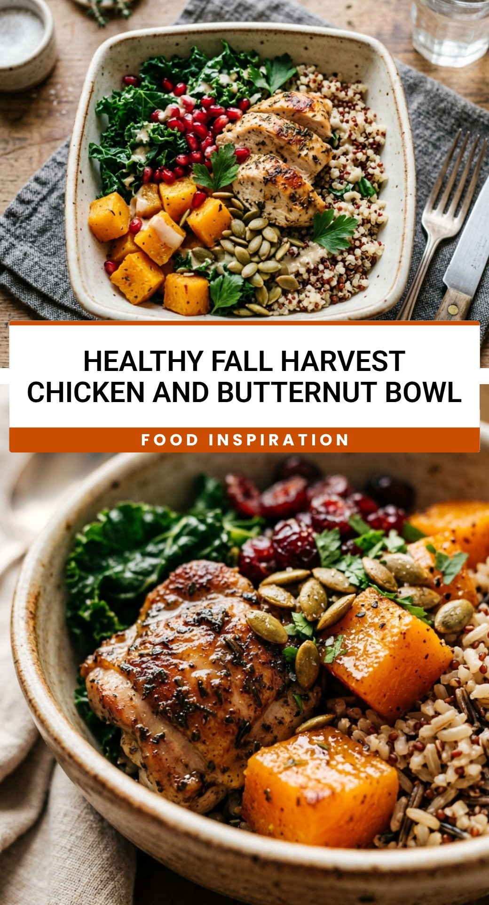

Healthy Fall Harvest Chicken And Butternut Bowl
October 1, 2026

As the air turns crisp and the leaves begin to change, there is nothing quite like a meal that captures the essence of the season. This Healthy Fall Harvest Chicken And Butternut Bowl is the ultimate comfort food, packed with vibrant colors and nourishing ingredients. It balances the sweetness of roasted squash with savory chicken and a tangy dressing, making it a perfect lunch or dinner for those chilly autumn evenings.
Recipe Information
Prep Time: 15 minutes
Cook Time: 30 minutes
Total Time: 45 minutes
Servings: 4
Difficulty Level: Easy
Nutrition Information
Calories per serving: 425 kcal
Protein: 32g
Carbohydrates: 44g
Fat: 15g
Fiber: 8g
Sugar: 11g
Sodium: 540mg